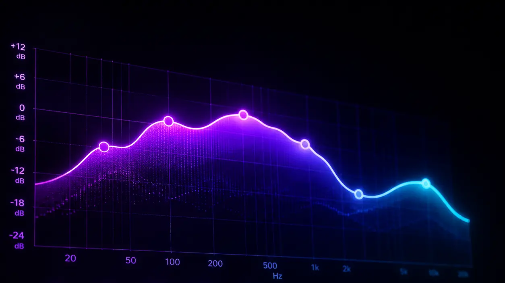

01Mix
Сведение
Собираем все элементы трека в цельное, объёмное и эмоциональное звучание.
- ↳ Баланс инструментов
- ↳ Обработка вокала
- ↳ Пространственная обработка
- ↳ Подготовка к мастерингу

MYS Studio · Human taste × AI power
Сведение, мастеринг и авторские AI-песни. Чистый звук, сильная эмоция и внимание к каждой детали.
[ 01 — О студии ]
Мы объединяем современные технологии искусственного интеллекта и профессиональную музыкальную обработку, чтобы создавать качественные треки любого жанра.
Работаем как с начинающими исполнителями, так и с опытными музыкантами, а также создаём музыку для бизнеса и рекламы.
[ 02 — Наши услуги ]
От чистой обработки готовой записи до песни, которой ещё не существовало.
Собираем все элементы трека в цельное, объёмное и эмоциональное звучание.
Доводим микс до коммерческого уровня и адаптируем под цифровые площадки.
Вы рассказываете идею — мы превращаем её в готовую композицию с характером, историей и профессиональным саундом.
[ 03 — Форматы ]
Создаём звучание под вашу задачу — личную, артистическую или коммерческую.
Сведение и мастеринг для уверенного звучания на любой площадке.
Уникальный подарок на день рождения, свадьбу или важную дату.
Гимны, джинглы и саунд-айдентика, которые усиливают узнаваемость.
[ 04 — Почему MYS ]
Не работаем по шаблону. Сначала понимаем, какое чувство должна вызвать музыка — и только потом выбираем инструменты.
Начать проект ↗Мы создаём музыку для
Новые работы, фрагменты треков и жизнь студии — в Telegram.
[ 05 — Контакты ]
Готовы создать вашу музыку?
Напишите удобным способом — обсудим задачу, сроки и желаемый результат. Обычно отвечаем в течение рабочего дня.